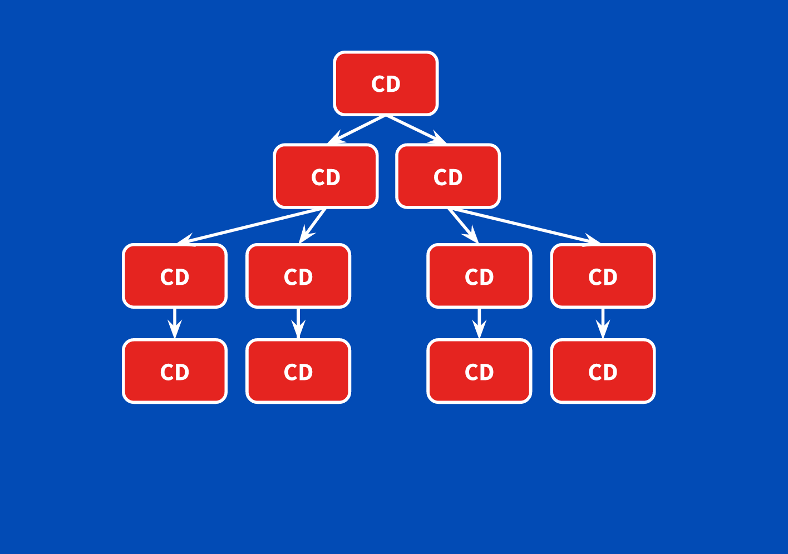

Angular
Ryan
Developer @ KBC
@ryandegruyter
https://github.com/ryandegruyter
Angular
Platform that makes it easy to build web applications
Cross platform (native) Mobile applications
Cross platform Desktop applications

Programming Nirvana
All platforms sharing the same codebase


A little history

October 2010 initial release
Developed by Miško Hevery @mhevery
Focus on building SPA's
AngularJS was very popular
Tech changes fast
New modern practices
- Mobile first
- Server side rendering
- Web components
- Performance (offline compilation)
- etc.
Angular
Release candidate May 2016
Development started in october 2014
Final September 2016
No warm welcome
Disappointed
AngularJS concepts were thrown out the door
New concepts
New syntax
Typescript & RxJS
Confusing versioning
Versioning
AngularJS
- AngularJS 1.2
- AngularJS 1.3
- AngularJS 1.4
- ...
Angular ( SemVer)
- Angular 2
- Angular 3
- Angular 4
- ...
Angular 3
Angular 4
Align angular modules
Router module was ahead
#itsjustangular
Angular
The first Angular is referred to as AngularJS
27 August 2018
Angular 6.1.3 stable (Beta 7 released)
Why Angular?
The Good Stuff
Open source community
Typescript
E2E Tooling (CLI)
Performance (CD, AoT Compilation, lazy loading, etc.)
Observable support (RxJS)
Component architecture
Not only browser (Native mobile, SSR / Pre-rendering, desktop, etc.)
Improved Testability
Enforce best practices
The Bad Stuff
Opinionated
Framework (note. Angular elements)
Observable support (RxJS)
Lot's of ceremony and boilerplate (Angular CLI)
Building blocks

Modules, Directives, Components, Templates, Data binding, Dependency Injection, Services, Metadata
Metadata
Tells Angular how to process a class / class property / constructor parameter
We attach metadata using decorators
Most of the time takes in a config object
- @NgModule()
- @Component()
- @Directive()
- @Injectable()
- @Inject()
- @Pipe()
- ...
What are Angular modules?
Group of inter-related Angular primitives
Every application has atleast 1 root module
- Directives
- Pipes
- Services
- Components
Example modules that come with the framework
Reactive forms
Router module
Browser module
@NgModule Decorator
import { BrowserModule } from '@angular/platform-browser';
import { NgModule } from '@angular/core';
import { AppComponent } from './app.component';
@NgModule({
declarations: [AppComponent, MyComboboxComponent,
CollapsibleDirective, CustomCurrencyPipe],
imports: [BrowserModule],
exports: [MyComboboxComponent],
providers: [UserService, LessonsService]
})
export class ExampleModule {
}
declarations: define ownership
imports: import other modules
exports: export a declaration for other modules
providers: global services
entryComponents: dynamic component loading
Root module
import { BrowserModule } from '@angular/platform-browser';
import { NgModule } from '@angular/core';
import { AppComponent } from './app.component';
@NgModule({
declarations: [AppComponent, MyComboboxComponent,
CollapsibleDirective, CustomCurrencyPipe],
imports: [BrowserModule],
exports: [MyComboboxComponent]
providers: [UserService, LessonsService],
bootstrap: [AppComponent]
})
export class ExampleModule {
}
bootstrap: []
import the browsermodule
Module Providers
Enrich the global application state
registered with the root injector
Lazy loading
Modules will get a custom injector
Bootstrap your root module
JIT, Just in time, dynamic bootstrap
AoT, Ahead of Time, static boostrap
JIT, Just in time, dynamic bootstrap
import {platformBrowserDynamic} from "@angular/platform-browser-dynamic";
@NgModule({...})
export class AppModule {
}
platformBrowserDynamic().bootstrapModule(AppModule);
Compiler is bundled with the app
Compiles the app at runtime
Good during development
Bigger application bundle => bigger filesize
AoT, Ahead of Time, static boostrap
npm install @angular/compiler-cli --save
./node_modules/.bin/ngc -p ./src
import { platformBrowser } from '@angular/platform-browser';
import { AppModuleNgFactory } from './main.ngfactory';
// Launch with the app module factory.
platformBrowser().bootstrapModuleFactory(AppModuleNgFactory);
Compiler is NOT bundled with the app
Compiles the app during build
Recommended for production
No compiler => Smaller bundle => smaller filesize
NgModule metadata helps with AoT
Feature modules
Extend the global application
Need CommonModule
Core Concepts
Components
Data Binding
Depedency Injection
Components
Components let you split the UI into independent (reusable) pieces, and think / work on each piece in isolation.
Every Angular application is a tree of components

How does a component look behind the scenes?
Component Configuration Object
@Component({
selector: 'my-cmp',
template: ``,
templateUrl: 'my_cmp.html',
providers: [],
styles: [],
encapsulation: ViewEncapsulation,
changeDetection: ChangeDetectionStrategy
})
Rendering a component
Define a selector (prefix to prevent conflicts)
@Component({
selector: 'prefix-my-component'
})
Declare it in a template
Lifecycle methods
- ngOnChange
- ngOnInit
- ngDoCheck
- ngAfterContentInit
- ngAfterContentChecked
- ngAfterViewInit
- ngAfterViewChecked
- ngOnDestroy
Component Communication
Data flows into a component via input properties.
Data flows out of a component via output properties.
You use it when you instantiate a component

Component architecture
React inspired
Dumb components (presentational)
Smart components (container)

Practice Time!
Data binding
Component <-> template communication
4 forms of data binding
- {{Interpolation}} -> to the dom
- [one way input] -> to the dom
- (one way output) <- from the dom
- [(two way)] <-> both directions

Component communication
Parent component <-> child component

One way binding syntax: From component to template
Interpolation
Property binding
Attribute property binding
Class property binding
Style property binding
Interpolation
{{ Hello world }}

Double curly braces {{}}
Most often used between HTML element tags
Property binding

Square brackets []
Most often used with attributes
Interpolation vs Property binding?
Choose wichever you or your team prefers
{{ Hello world }}
Attribute Property binding
Binding target prefixed with attr
Used when there is no 1 to 1 mapping between attribute and DOM property
Class Property binding
Binding target prefixed with class
Used for adding or removing css classes
Evaluates the expression to a boolean
Style Property binding
Binding target prefixed with style
Setting inline styles dynamically
One way binding syntax: From template to component
Event binding
Two way binding syntax: Component <-> template
ngModel
FormsModule is required
Change detection
When an expression inside the template changes, the view should update and rerender
- Watch the data for changes (Change detection)
- Propagate the change to the DOM
Practice Time!
Directives
Component directive
Structural Directive
Attribute Directive
Structural Directive
Used for adding or removing DOM elements
ngFor
ngIf
...
Attribute Directive
Used to change the behavior or appearance of a DOM element
ngStyle
ngClass
...
Practice Time!
Dependency Injection
Central idea
We don't create new instances of classes or objects. We request an instance in the constructor parameter list using a type token
@Injectable()
class MyService{
private _otherService: OtherService;
constructor(otherService: OtherService){
this._otherService = otherService;
}
}
Standalone
DI System can be used standalone
ReflectiveInjector API
Injectors
Always 1 root injector
Multiple child injectors
Allows for multiple instances of the same type
How many injectors?
Angular doesn't literally create a separate injector for each component. Every component doesn't need its own injector and it would be horribly inefficient to create masses of injectors for no good purpose. But it is true that every component has an injector (even if it shares that injector with another component) and there may be many different injector instances operating at different levels of the component tree. It is useful to pretend that every component has its own injector.
Why DI?
No new operator all over your codebase
Switch between different implementations
Program to an interface instead of a concrete type
Easy to mock and test
How to use it?
Register a provider in a component/ngmodule providers metadata property
A provider provides a concrete instance to the injector
@Component({
providers: [OtherService]
})
class MyCmp{
private _otherService: OtherService;
constructor(otherService: OtherService){
this._otherService = otherService;
}
}
Program to an interface
Interfaces are a compile time artifact
They dissapear once the application gets compiled
Injector cannot map an interface token
InjectionToken
Observables
RxJS
Event based programming / Reactive programming
A collection of values over any amount of time
Highly composable
Push based
HttpModule
Observables are used to make AJAX requests
You can still use promises
But observables are more powerfull
Advantages Observables over Promises
Able to cancel a request
Easier to handle progress events
Reusable
Multiple values
Composable
Observable binding syntax
async pipe
Can also be used to bind promises
@Component({...})
export class MyCmp{
interval$: Observable;
constructor(){
this.interval$ = Observable.interval(1000).map(x=>"Count: "+x);
}
}
{{interval$ | async}}
Time to practice
3 ways to create forms
Reactive forms
Template driven forms
Mix of both
Reactive forms
aka model driven forms
component source of truth
validation and controls defined in the component
No ngModel
More code but more powerfull
Template driven forms
Template source of truth
validation and controls are defined in the template
Uses ngModel
Quick and easy
Thanks for watching!
Now kick some ass!